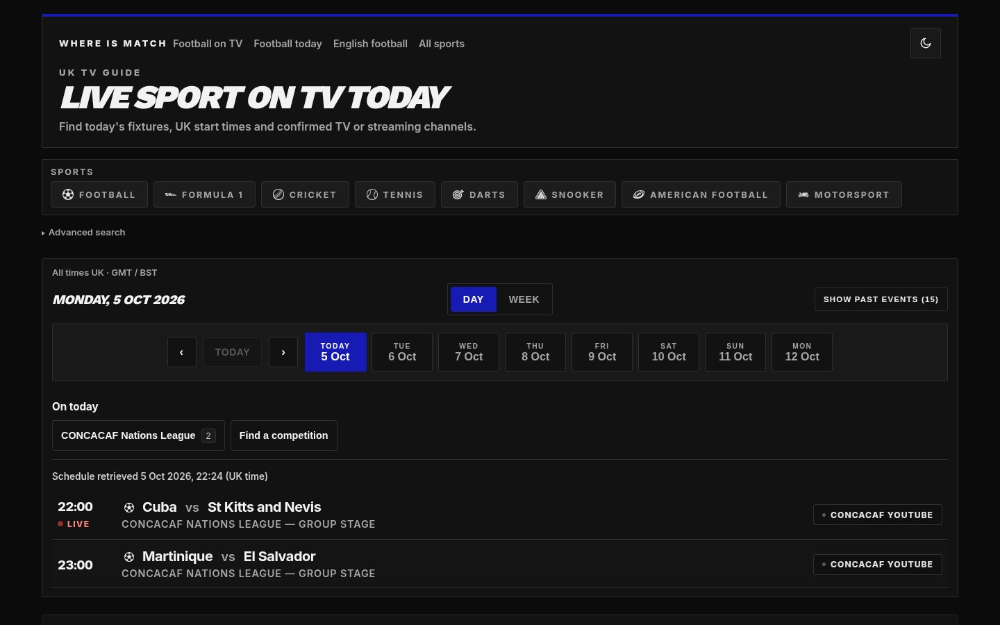

Sports TV guide
Whereismatch
Find where to watch football and other live sports on UK TV and streaming services. Browse fixtures by sport, competition or broadcaster, with UK start times. Powered by World Sports API.